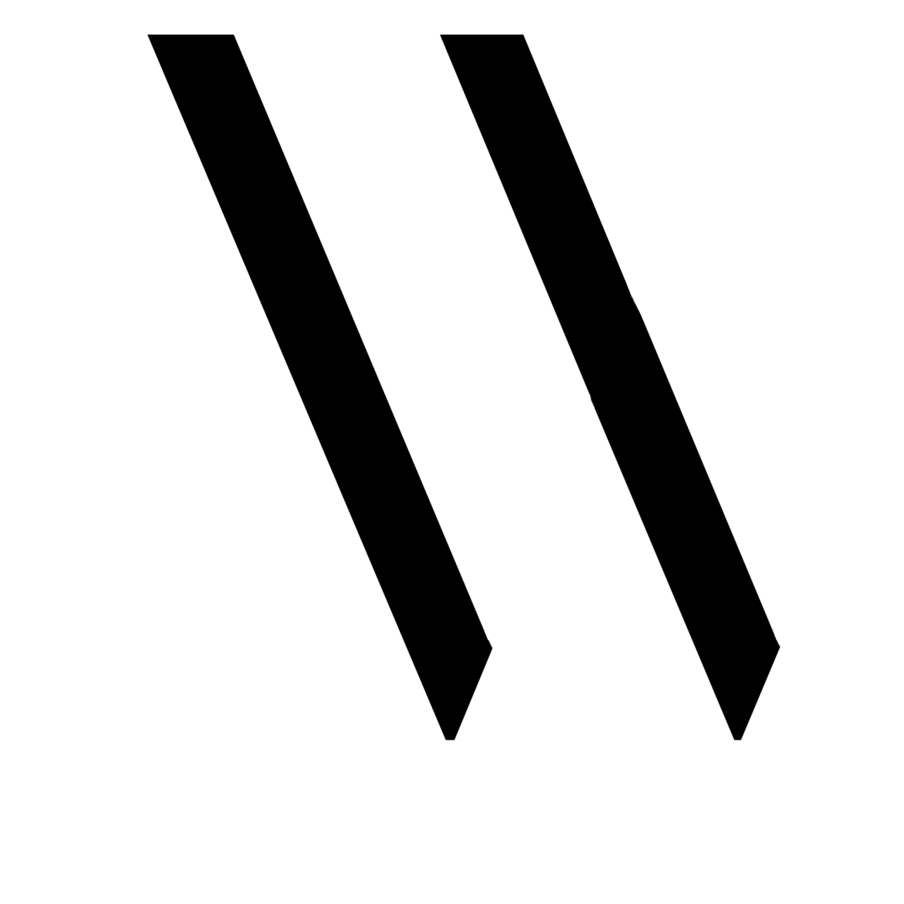
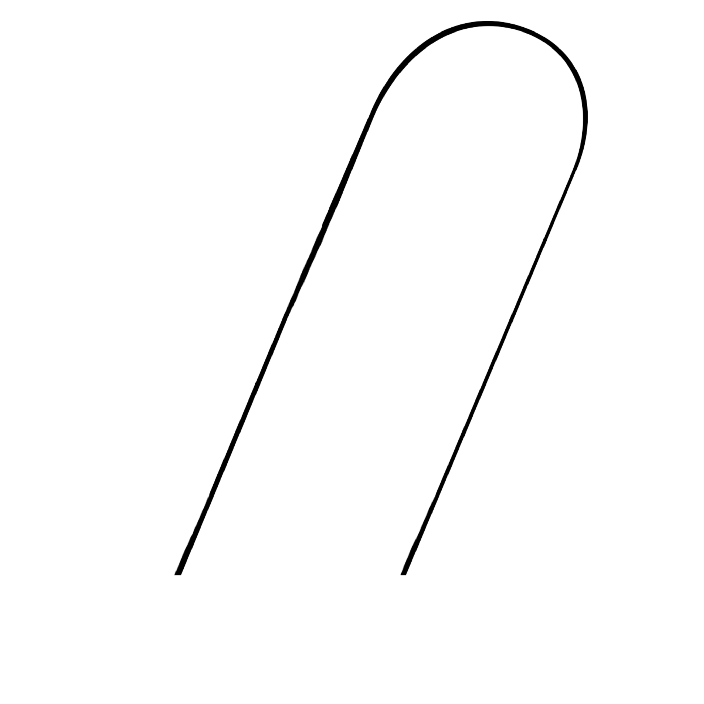

Two thick, strong lines. Sharp edges. Separated, yet there is a sense of relationship created by the parallel corespondence. Apart, yet not alone.
These lines give a sense of power, prestige and wealth. Not in a flashy, chauvanistic way, but in elegant strength.
One narrow, curving line. Soft, graceful, and almost delicate. It creates a sense of rhythm and energy; gently flowing from one point to another.
This line creates a sense of subtle beauty. It does not flaunt with calligraphic swirls and swishes, but portrays is beauty in its own elusive way.

Two pieces coming together as one to create an unexpected balance. Strong and Soft. Thick and Thin. Power and Grace.
Brown Sugar is a beautiful display font as a whole, but the W encapsulates the mood of the font in just one letter. When the two contrasting pieces merge, they form a soft, yet striking letter.
The W shows the versatility of the font. The contrast between the harsh and soft lines makes it perfect for logos, blogs, magazines and posters.
What better font is there to throw shade at Vogue, create stunning images, and highlight features in an editorial style?